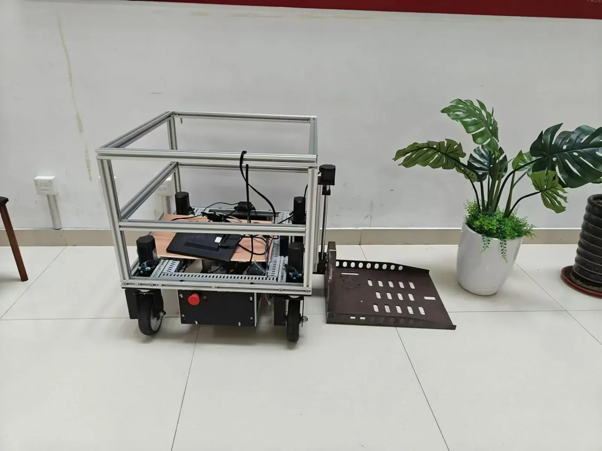

跨环境协作导航Cross-environment navigation · 2024–2025
Kangaroo 子母车跨环境导航Kangaroo: macro–micro cross-environment navigation
让母车承担长距离运输，子车进入狭窄空间，衔接室外道路与室内末端任务。A macro vehicle handles long-distance travel while a micro vehicle enters narrow spaces, linking outdoor routes to indoor last-mile tasks.
背景与目标Problem & goal
宽阔室外道路与建筑内部窄通道对车体尺寸、定位方式和运动能力有不同要求。项目以母车和子车分工，解决单一平台难以连续覆盖两类环境的问题。Open outdoor roads and narrow indoor passages require different vehicle sizes, localization methods, and motion capabilities. The project divides responsibilities between macro and micro vehicles to link these environments.
系统与关键技术System & technical approach
母车结合自建 RTK 基站、GNSS/IMU 与路径控制完成大范围运输；子车使用 RGB-D 感知与轻量主机进入室内。两车通过 Wi-Fi 交换导航数据，侧挂升降载台与视觉标记支持装卸和对接。相关论文还研究需求指令驱动的反馈规划。The macro vehicle uses a local RTK base station, GNSS/IMU, and path control for large-area travel. The micro vehicle uses RGB-D perception and a compact computer indoors. Navigation data is exchanged over Wi-Fi; a side-mounted lifting platform and visual markers support loading and docking. The associated paper also studies demand-driven feedback planning.
- 关键设计是让两种载具各自适配环境，再在交接处协调感知与控制。The central design adapts each vehicle to its environment and coordinates perception and control at the handoff.
演示与结果Demonstration & outcome
实机视频展示母车载运子车、升降与对接，以及子车在室内走廊行驶。论文报告了跨环境场景评估；网页演示只对应镜头中可见的流程。Real robot footage shows macro-vehicle transport, lifting and docking, and micro-vehicle travel in an indoor corridor. The paper reports cross-environment evaluations; the video illustrates the operations visible on screen.
